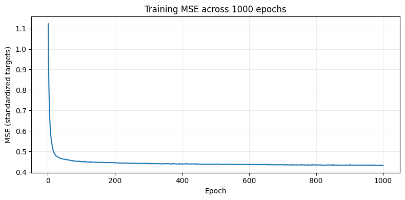
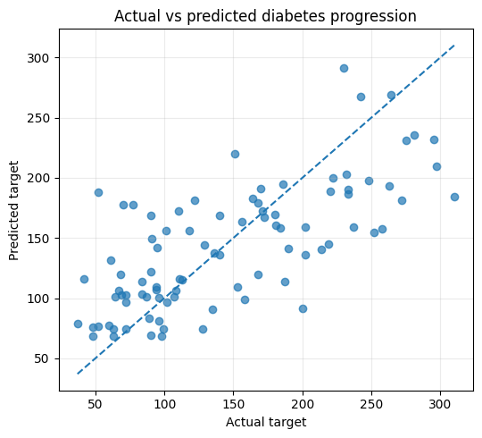

Lab Task 4 — PyTorch Regression Model#
Source: Understanding Deep Learning, Laboratory Task 4.
Instructor requirements: Regression dataset; MSE Loss; two fully connected layers; batch size 8; SGD optimizer; 1000 epochs.
This solution uses the built-in diabetes regression dataset from scikit-learn, split into training and testing sets. Input features and target values are standardized using the training set only so SGD can train stably. The predictions are converted back to their original units when reported.
import numpy as np
import torch
from torch import nn
from torch.utils.data import DataLoader, TensorDataset
from sklearn.datasets import load_diabetes
from sklearn.model_selection import train_test_split
from sklearn.preprocessing import StandardScaler
from sklearn.metrics import mean_squared_error, mean_absolute_error, r2_score
import matplotlib.pyplot as plt
torch.manual_seed(42)
np.random.seed(42)
torch.set_num_threads(1) # modest CPU use; training also works without this line
# Built-in regression dataset (442 samples, 10 features)
data = load_diabetes()
X = data.data.astype(np.float32)
y = data.target.astype(np.float32).reshape(-1, 1)
X_train, X_test, y_train, y_test = train_test_split(
X, y, test_size=0.20, random_state=42)
# Fit scaling on training data only
x_scaler = StandardScaler()
y_scaler = StandardScaler()
X_train_s = x_scaler.fit_transform(X_train).astype(np.float32)
X_test_s = x_scaler.transform(X_test).astype(np.float32)
y_train_s = y_scaler.fit_transform(y_train).astype(np.float32)
train_data = TensorDataset(torch.from_numpy(X_train_s), torch.from_numpy(y_train_s))
train_loader = DataLoader(train_data, batch_size=8, shuffle=True)
# Exactly TWO fully connected (nn.Linear) layers
model = nn.Sequential(
nn.Linear(X_train.shape[1], 12),
nn.ReLU(),
nn.Linear(12, 1)
)
criterion = nn.MSELoss() # required MSE loss
optimizer = torch.optim.SGD(model.parameters(), lr=0.004, weight_decay=0.05) # required SGD
EPOCHS = 1000 # required training epochs
BATCH_SIZE = 8 # required batch size
assert train_loader.batch_size == BATCH_SIZE
assert len([module for module in model.modules() if isinstance(module, nn.Linear)]) == 2
print('Training samples:', len(train_data))
print('Test samples:', len(X_test))
print('Model:', model)
Training samples: 353
Test samples: 89
Model: Sequential(
(0): Linear(in_features=10, out_features=12, bias=True)
(1): ReLU()
(2): Linear(in_features=12, out_features=1, bias=True)
)
# Train for 1000 epochs with batches of 8
history = []
for epoch in range(EPOCHS):
model.train()
total_loss = 0.0
for xb, yb in train_loader:
optimizer.zero_grad()
predictions = model(xb)
loss = criterion(predictions, yb)
loss.backward()
optimizer.step()
total_loss += loss.item() * len(xb)
epoch_mse = total_loss / len(train_data)
history.append(epoch_mse)
if epoch == 0 or (epoch + 1) % 200 == 0:
print(f'Epoch {epoch+1:4d}/{EPOCHS}: training MSE (scaled target) = {epoch_mse:.5f}')
# Evaluate on held-out testing data, restoring original units
model.eval()
with torch.no_grad():
pred_test_scaled = model(torch.from_numpy(X_test_s)).numpy()
y_pred = y_scaler.inverse_transform(pred_test_scaled).reshape(-1)
y_true = y_test.reshape(-1)
mse_test = mean_squared_error(y_true, y_pred)
rmse_test = float(np.sqrt(mse_test))
mae_test = mean_absolute_error(y_true, y_pred)
r2_test = r2_score(y_true, y_pred)
print(f'\nTest MSE: {mse_test:.3f}')
print(f'Test RMSE: {rmse_test:.3f}')
print(f'Test MAE: {mae_test:.3f}')
print(f'Test R²: {r2_test:.3f}')
assert len(history) == 1000
assert np.isfinite(mse_test) and np.isfinite(rmse_test)
Epoch 1/1000: training MSE (scaled target) = 1.12355
Epoch 200/1000: training MSE (scaled target) = 0.44412
Epoch 400/1000: training MSE (scaled target) = 0.43883
Epoch 600/1000: training MSE (scaled target) = 0.43543
Epoch 800/1000: training MSE (scaled target) = 0.43332
Epoch 1000/1000: training MSE (scaled target) = 0.43230
Test MSE: 2609.875
Test RMSE: 51.087
Test MAE: 40.425
Test R²: 0.507
fig, ax = plt.subplots(figsize=(8, 4))
ax.plot(np.arange(1, len(history)+1), history)
ax.set(title='Training MSE across 1000 epochs', xlabel='Epoch', ylabel='MSE (standardized targets)')
ax.grid(alpha=0.25)
plt.tight_layout()
plt.show()
fig, ax = plt.subplots(figsize=(5.5, 5))
ax.scatter(y_true, y_pred, alpha=0.7)
lim_low = min(y_true.min(), y_pred.min())
lim_high = max(y_true.max(), y_pred.max())
ax.plot([lim_low, lim_high], [lim_low, lim_high], '--')
ax.set(title='Actual vs predicted diabetes progression', xlabel='Actual target', ylabel='Predicted target')
ax.grid(alpha=0.25)
plt.tight_layout()
plt.show()


Interpretation: The training curve shows how the model’s MSE changes over 1000 epochs. Test MSE and RMSE summarize prediction error on unseen samples, while R² describes how well the regression predicts variation in the diabetes progression target. The two linear layers are separated by ReLU; the last layer has no activation because regression predictions are continuous. The evaluation metrics come from the code output and should not be claimed before running it.